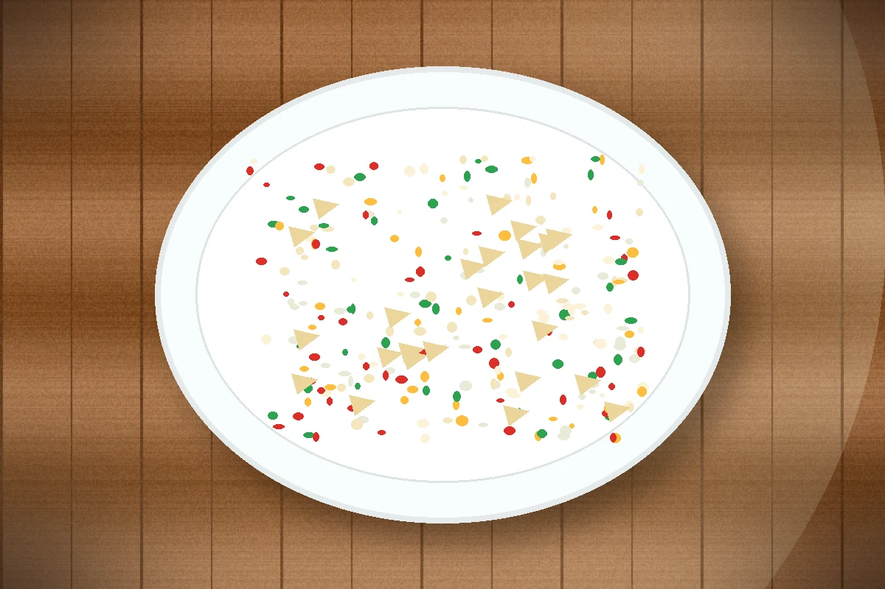

ID recette : 20000101-004
Salade de riz au thon
Une recette simple et accessible : salade de riz au thon.
Une salade froide simple, pratique pour un repas sans four. Elle peut être préparée à l’avance et adaptée avec les conserves disponibles.

⚖️ Adapter les quantités
Le calcul adapte les quantités proportionnellement.
🧺 Ingrédients avec quantités
Principaux
- 280 g — riz
- 200 g — thon égoutté
Secondaires
- 150 g — maïs égoutté
- 250 g — tomates
Optionnels
- 2 pièces — œufs durs
- 50 g — cornichons
👩🍳 Préparation détaillée
- Faire cuire le riz, puis l’égoutter et le laisser refroidir.
- Égoutter le thon et le maïs.
- Couper les tomates en petits morceaux.
- Mélanger le riz froid, le thon, le maïs et les tomates dans un saladier.
- Ajouter les œufs durs ou les cornichons si disponibles.
- Assaisonner légèrement et conserver au frais avant de servir.
💡 Astuce anti-gaspi
Utiliser les restes compatibles pour éviter le gaspillage.
🔁 Variantes possibles
Adapter avec les produits disponibles : légumes, conserves, fromage ou féculents.
⚠️ Allergènes et conservation
Allergènes : Poisson, Œufs
Conservation : À conserver 24 h au réfrigérateur dans une boîte fermée.
Réchauffage : À réchauffer doucement si nécessaire.
Vérifiez toujours les étiquettes des produits utilisés.
🔎 Filtres associés
Cliquez sur un bouton pour trouver les recettes associées au même champ.
Sous-catégorie : Salade
Moment du repas : Dejeuner Diner
Équipement : Casserole
📱 QR code
QR code vers la fiche en ligne.
https://recettesducoeur.github.io/recettes/20000101-004.html
Sur mobile/tablette, seul le téléchargement PDF est proposé. Sur PC, l’impression conserve les quantités sélectionnées.